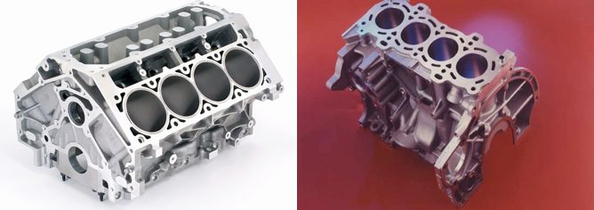

Artículo
Los motores ICE funcionan con gasolina o diésel.
En esta página aprenderás sobre motores en línea, en V y sus variantes V4, V6, V8 y V10.
- Motor en línea
- Motor en V
- Motor V10 de alto rendimiento
Motores en Línea
Los motores en línea tienen todos sus cilindros colocados uno detrás del otro. Son comunes en autos compactos y sedanes.
Motores en V
Motor V6
Potente y versátil, el motor V6 se encuentra en SUVs y autos deportivos.
Motor V8
El motor V8 es sinónimo de fuerza. Usado en autos de lujo y muscle cars.
Motor V10
Alta cilindrada y desempeño, ideal para vehículos de competición.